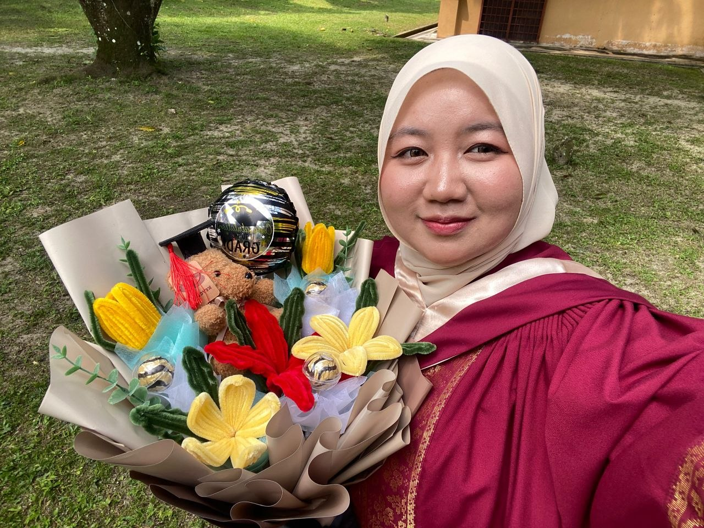
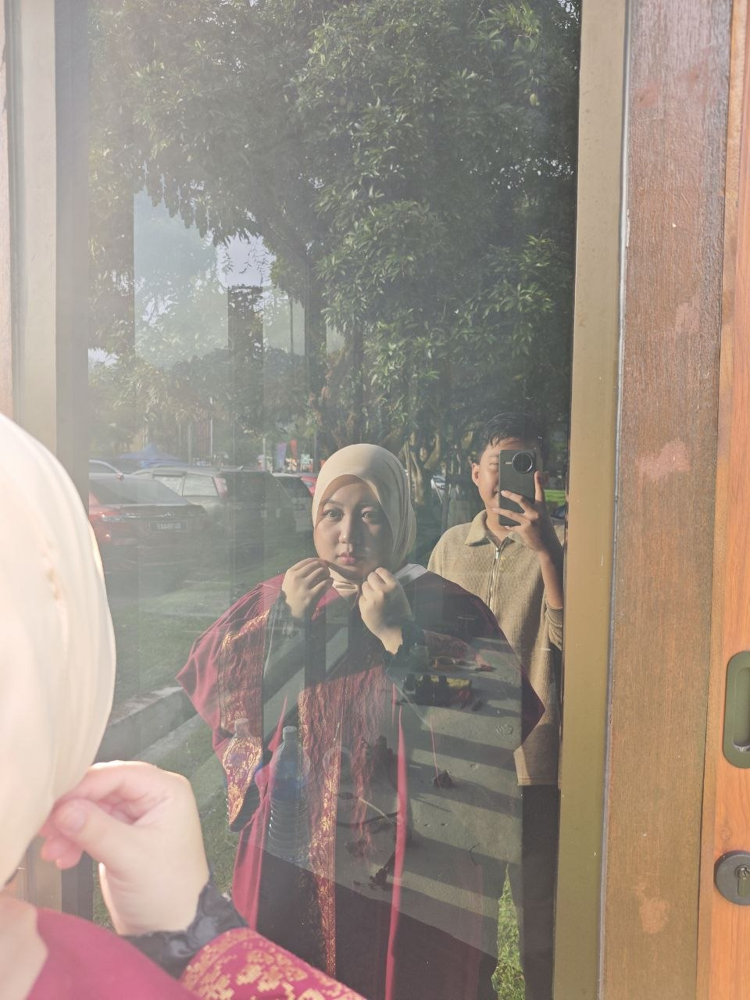
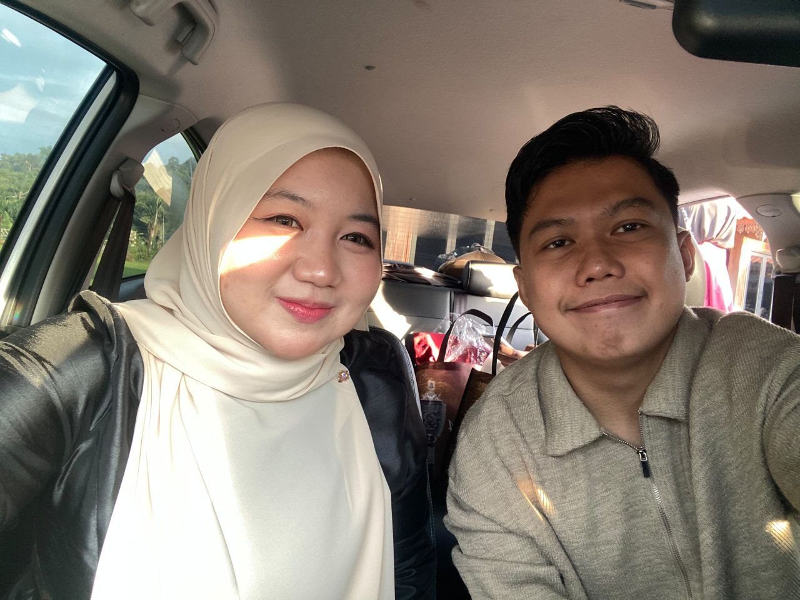
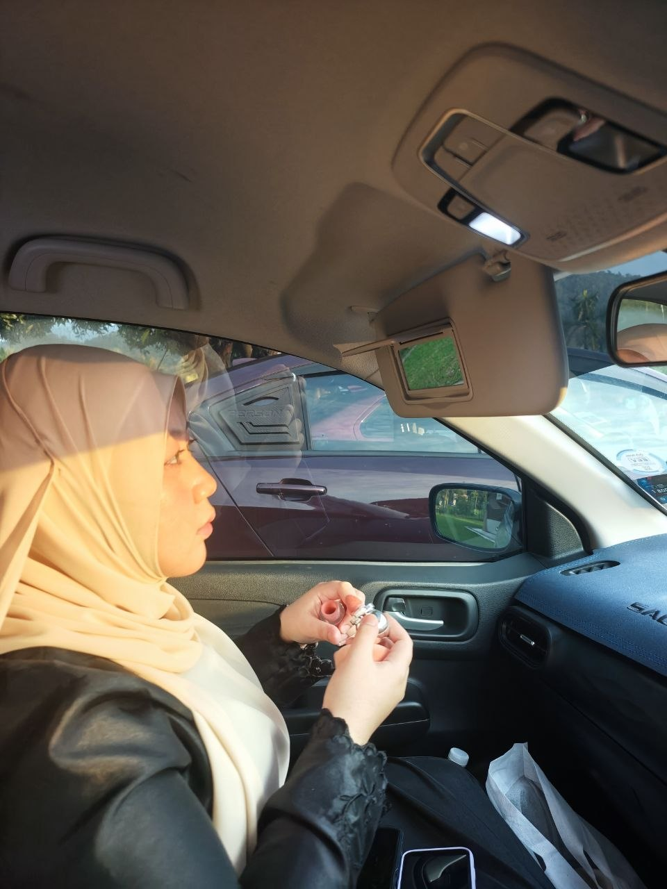
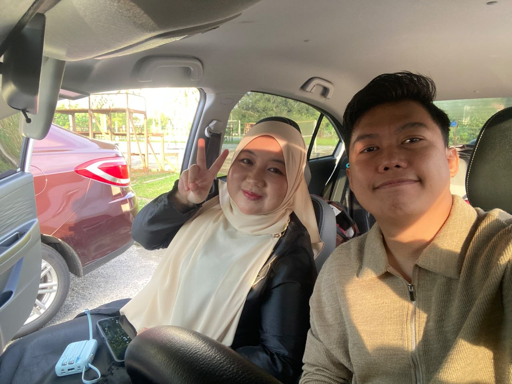
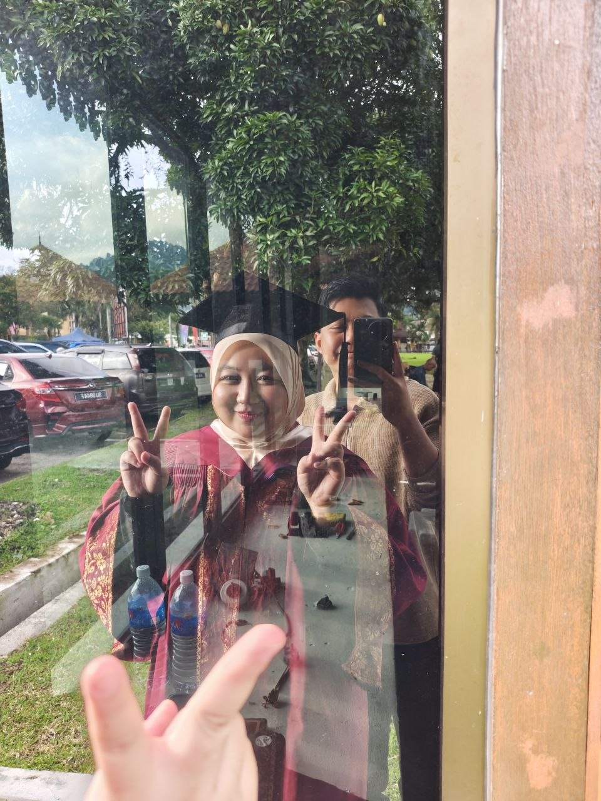
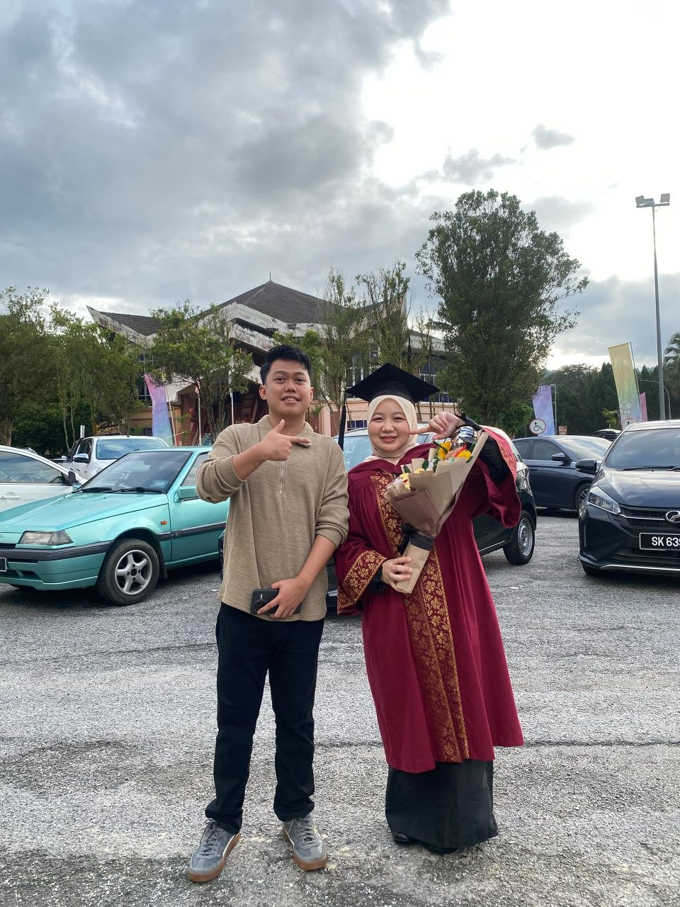
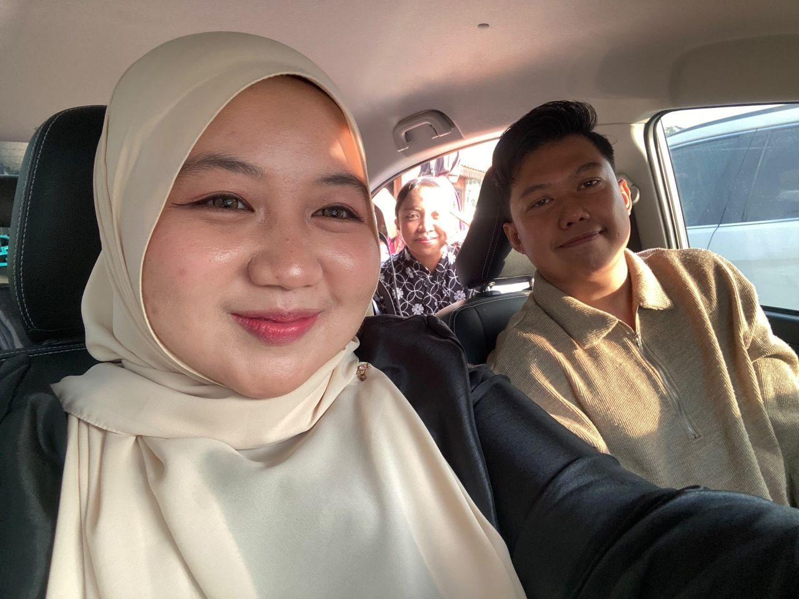
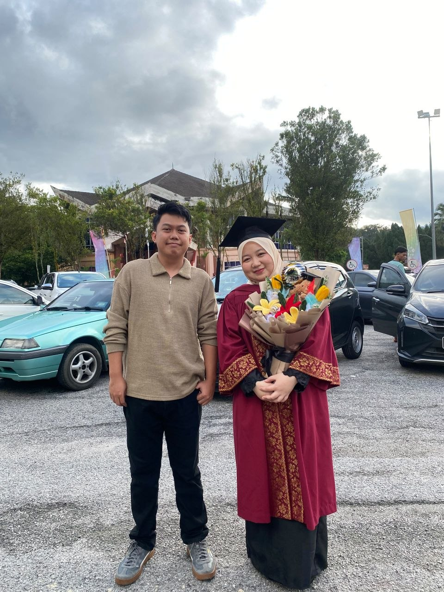
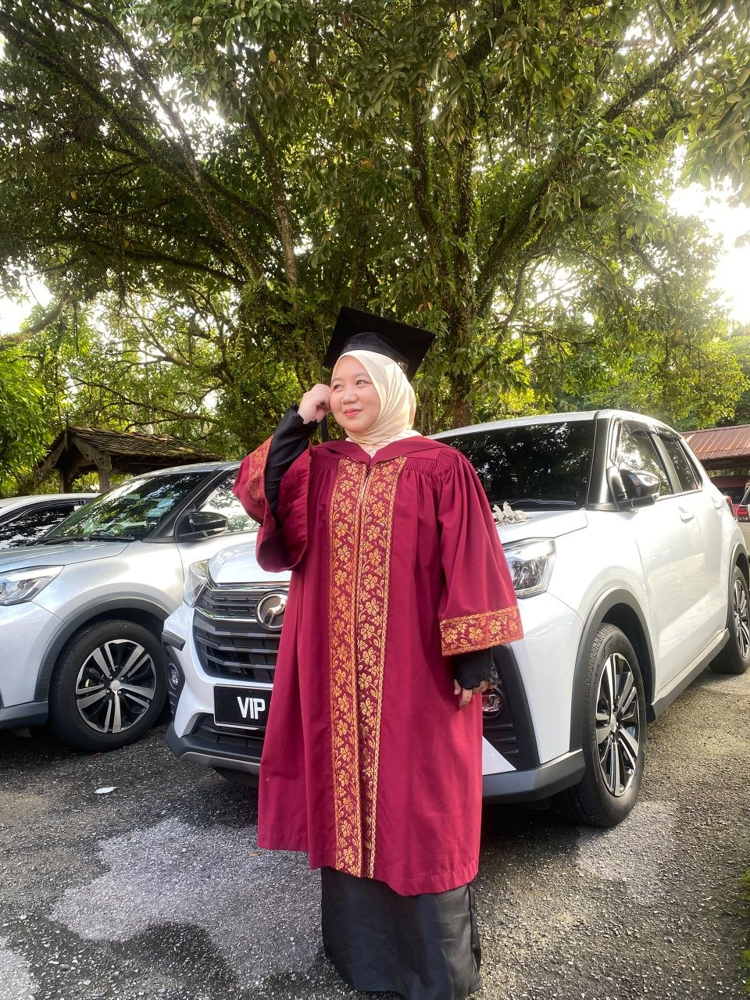

No. 001
Bunga Pertama
Bunga pertama yang aku belikan untuk kau. Teddy tu pakai topi konvo, kau pula pakai senyuman yang aku tak lupa sampai sekarang.
Dewan 1 · Pertemuan Pertama
Hari Konvokesyen
First time aku jumpa kau depan2. Awalnya datang jadi transport ja utk hari konvo kau tapi tuptup berjaya jg belikan kau bunga !.
Aku ingatkan aku dah cukup suka kau sebelum tu. Rupanya bila jumpa, tambahhh cairr. sehhhhhhh. Tak sangka langsung kan.
Rekod cuaca: cerah dalam kereta, mendung kat parking. Hati panas sepanjang hari.

No. 002
Pantulan Kaca
Kau sibuk betulkan kolar jubah. Aku pula sibuk curi snap kau dari belakang HOHOHHO.

No. 003
Cahaya Petang
Matahari pun nak tumpang tengok muka kau. Pura2 faham je la ek perasaan org tu.

No. 004
Touch-up Sebelum Bergambar
Kau x perasan aku ambil gambar ni. Padahal kau dah cantik pun tanpa touch-up werkk.

No. 005
Peace Dari Seat Sebelah
Driver bertugas hari tu: si endut. Penumpang paling comel: si miwwyaaa.

No. 006
Dua Peace, Satu Jurugambar-diana
Topi konvo senget sikit. Senyum kau pula tepat kena kat hati aku. eittts

No. 007
Tunjuk Siapa Graduan
Hari tu hari kau. Aku cuma tolong tunjuk kat semua orang.

No. 008
Ada Yang Mengintai
Ada orang kat belakang senyum tengok kita. Aku pun senyum ja. Tak berhenti dari pagi. kottt

No. 009
Sebelah-menyebelah
Gambar pertama kita berdiri berdua. Mencuba cover gugup konon. Nampak tak?

No. 010
Graduan
Tahniah,sayang.Eh miwyaaa ba. Awassss. Semua penat kau selama ni akhirnya terbayar, Alhamdulillah pahit manis di IKN dah berhasil etchingg.